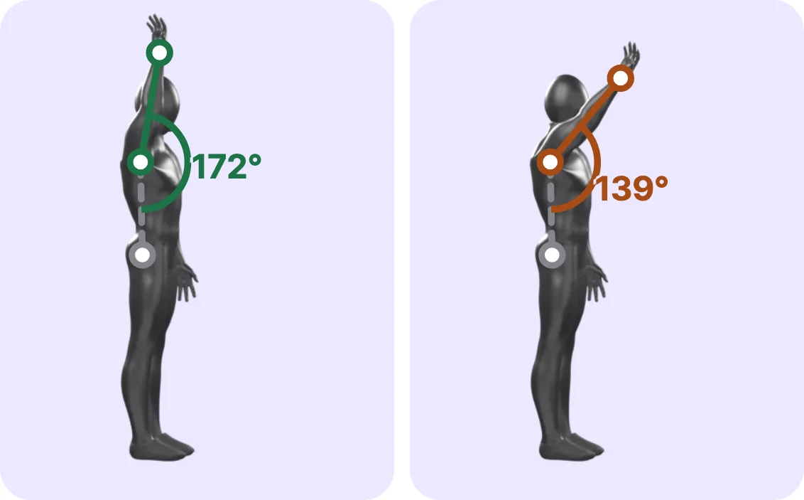

Block periodization
Block-periodized program built around your goal and meet date
Finish a set, log how hard it was, and FitBoost works out your next weight. Your workout records are free, with no cap.
In-workout coachPRO
Finish a set and pick how many more reps you had left. Your next set's weight changes right away.
The harder that set was, the longer you rest. A notification calls you back.
When fatigue starts costing you reps, it tells you to call it a day. The more you train, the better it learns your own stopping point.
Routine auto progressionPRO
Start a routine and today's weights and reps come from your last sessions. Miss twice in a row and it eases off; come back from a long break and it starts you gently. Each kind of equipment uses its own step.
Recovery map
Recent effort and time since each session show how recovered each muscle is. On days you'd hit something still sore, the home screen tells you first.
Pain notesLog where it hurts and the lifts that use that muscle get lighter, with substitutes suggested.
Movement assessmentFree
Stand your phone up and move in front of the camera to measure mobility, fitness, jumps, bar speed and running form. Video is processed only on your device.

Raising your arm forward (shoulder flexion). The angle between the trunk line (dotted) and the arm line.
Follow the on-screen and voice cues to measure joint angles, jump height, bar speed and running landing. The front camera works too.
Joint points and angles are drawn on the figure to show which side is weaker, with measurement error, change since last time, left–right difference and research ranges with sources.
Warm-up drills for the weaker side are suggested for that day’s workout, and you’re reminded when it’s time to retest.
Each test shows a plain name with the technical term underneath. It doesn’t replace a medical diagnosis; if you have pain, see a professional.
Plate math
Add your bar and the plates you own to see what to load and in what order. Suggested weights snap to loads you can actually build. Try it.
PRO+ coaching
Everything in PRO, plus a program built around your goal and meet date, with weight and sets adjusted day by day.
Block-periodized program built around your goal and meet date
Daily intensity tuned to sleep, soreness, stress and HRV
Back-off loads adjusted on the spot from your top-set RPE
Deloads suggested from performance and fatigue trends
Weekly sets per muscle against MEV and MRV
Calories and macros that adapt weekly to your weight trend
Fills in warm-up steps to match your working weight and your bar.
Pick your goal, experience, days per week, session length and equipment, and get a weekly plan saved as routines. Muscles you want to rest are left out; the ones you want to grow get more work. Set a training goal such as strength, hypertrophy, or fat loss, and the starting choices follow it.
Compares your five big lifts against typical ratios and adds a set or an accessory where one lags.
Fill in calories and distance from treadmill speed and incline, or erg pace and watts. In a past workout, just change the time or distance and calories fill in.
Treadmill · 6.5 km/h · 8% incline · 30 min
Plan warm-up sets apart from working sets, and get suggested weights and reps for every drop and back-off set. Pair two exercises as a superset, and log planks in seconds.
Pick a date range and send a workout report. Trainers keep each client's log separate.
One two-way button at the top of Home turns the whole app toward running. Track runs on your phone, Apple Watch, Galaxy Watch or Garmin, and one reference result sets your pace zones and predicted times. A single run is kept within 110% of your longest in the last 30 days, and the weekly running plan (PRO+) turns a quality run the day after legs into an easy run.
Courses gather on the running Home, nearest first. Save a run as a course in one tap and send it to a friend right away. Running the same route twice also makes a course to race your past self on, and you can draw one on the map or import GPX or TCX. Scan a friend's course QR code in the app, and share with no server. For courses made from a route you ran, the start and finish areas are hidden at random when you send.
Completed sets of 12 reps or fewer go through Epley, Brzycki and Lombardi, and we take the median. Log RIR and it gets sharper.
No sign-up needed. iCloud or Google Drive keeps your devices in sync, for free.
Set one unit for the whole app, or a different one per exercise.
Turn runs and strength workouts into cards sized for Instagram stories and post them straight away. Like an Instagram story, drag and type right on a full-screen canvas, and drop stickers on the bin to delete them. 26 ready-made layouts fill in with this record, and you can add word chips, speech bubbles, location pins and photo stickers, pick a font and color for each number, unit and label, and tuck stickers behind the person in your photo. Runs exported as GPX or TCX from other apps come in too, and cards save straight to Photos. Photos are processed only on your device, and routes are drawn with the start and finish hidden.
Set per number, unit and label. All under the Open Font License.
Watch
Finish a set and pick the effort. The rest timer starts, and a tap on your wrist says when it's time to go. Timed moves like planks show in seconds, and you can adjust them right on the watch.
Exercise library
Each one covers setup, steps, breathing and precautions. Filter by muscle and equipment, with functional moves like burpees and man makers included.
Pricing
Your history is what the math runs on, so logging is never locked. PRO takes that history further.
$0
$2.99/mo or $22.99/yr
Everything in Free, plus
$5.99/mo or $44.99/yr
Everything in PRO, plus
Subscriptions are billed through your Apple or Google account and can be canceled in the store at any time. Prices shown are in US dollars; the price in your store's purchase sheet applies.
No sign-up. Use it in Korean, English, Japanese, Simplified Chinese or Traditional Chinese.